3.7 Ethical, Legal and Environmental impacts of Digital Technology on Wider Society, including issues of Privacy
Table of Contents
- 1. Ethical Issues
- Learn It: What are Ethical Issues?
- Learn It: Recent Technological Developments
- Try It: The Trolley Problem
- Try It: Technology Issues Research
- Learn It: Internet Privacy
- Learn It: Censorship and Surveillance
- Learn It: Social Consequences
- Learn It: Cyber Security Issues
- Learn It: Wireless Networking
- Learn It: Mobile Technologies
- Learn It: Cloud Storage
- Learn It: Wearable Technologies
- Learn It: Computer Based Implants
- Try It: Computer Based Implants
- Learn It: Health Impacts
- Try It: Health Impacts
- Learn It: The Digital Divide
- Try It: The digital Divide
- Learn It: Environmental Issues
- Try It: Environmental Issues
- Learn It: Shopping
- 2. Legal Issues
1 Ethical Issues
Learn It: What are Ethical Issues?
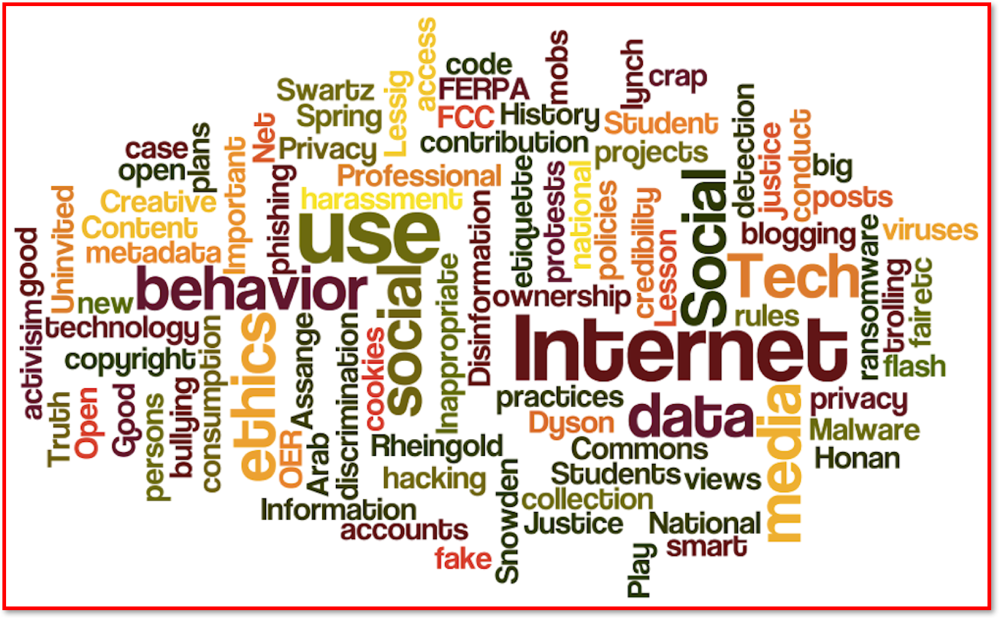
Ethical Issues - There are several laws that govern the use of computer systems and data. However, ethics is about good practice and behaving in a morally correct way. Ethical actions are different from lawful actions. Sometimes actions can be legal, but are they ethical?
Ethical Issues
- Computers have become so widespread that it is difficult to imagine a world without them.
- How much of an impact have they had on our culture and society?
For Example:
- Ethical issues are ignored with our ever increasing use of technology.
- It is becoming more socially accpetable to use technology online to be rude or bully strangers that we haven't even met.
- Has technology made us a more or less caring society?
Q1. Think of some other ways in which computer technology has changed the way in which we live and work?
- There are some benefits:
- Many more people are now able to communicate with a much larger world through the use of social media, communication is possible
between countires and people have access to a ealth of information through the Internet.
- There is also benefits to safety as it is easier than it used to be for a person who is in danger to seek help.
- Here are some drawbacks:
- Mobile phones make it much easier for people to put their own privacy at risk, since photos and personal information can be
shared on social media platforms.
- There are ethical issues relating to equality of access to technology, where more advanced technology is not available to
less affluent people which creates what is known as the digital divide.
In this topic we will cover the following aspects:
- Recent Technological Developments.
- Internet Privacy.
- Censorship and Surveillance.
- Social Consequences.
- Cyber Security.
- Wireless Networking.
- Mobile Technologies.
- Cloud Storage.
- Wearable Technologies.
- Computer Based Implants.
- Health Impacts.
- The Digital Divide.
- Environmental Issues.
- Legal Issues.
Learn It: Recent Technological Developments
Technological Developments - Computer technology is vital in today's society. Technology has given us many benefits such as 5G, Virtual Reality, Mixed Reality, Artificial Intelligence, Regenerative medicine, Driverless vehicles, Cryptocurrency, Quantum computing, Digital Assistants, Robots, Smart Devices and automation are a few of the many technologies available. However, technology also has a wide variety of negative impacts, such as health issues, less social interactions, over reliance on technology, environmental pollution and increased use of energy to power the huge number of electronic devices.
Recent Technological Developments
- The Mixed Reality(MR):
- Mixed Reality is the
combinationof twin technologies ofVirtual Reality (VR)andAugmented Reality (AR). - Mixed reality (MR), sometimes referred to as
polyplexity (PP), is the merging ofrealandvirtual worldsto produce new environments and visualisations wherephysicalanddigitalobjects co-exist and interact inreal-time. - Mixed reality not only takes place in the
physical worldor thevirtual world, but is ahybrid of realityandvirtual reality, encompassing bothAugmented RealityandAugmented Virtualityviaimmersive technology. - The first immersive mixed reality system, providing enveloping sight, sound, and touch was the
Virtual Fixtures platformdeveloped at theU.S. Air Force's Armstrong Laboratoriesin the early 1990s. - In a study published in 1992, the
Virtual Fixtures projectat the U.S. Air Forcedemonstratedfor the first time thathuman performancecould besignificantly amplifiedby the introduction of spatially registered virtual objects overlaid on top of a person's direct view of a real physical environment.
- Mixed Reality is the
- Artificial Intelligence(AI):
- With the onset of Artificial Intelligence, the machines are programmed to conduct the tasks that were restricted to the human mind. The artificial intelligence-based software can think intelligently like humans.
- The subsets of artificial intelligence like machine learning and deep learning are gaining constant popularity among businesses. Now, more and more companies are taking machine learning development services as a necessity.
- Artificial intelligence improvises business tasks and makes them simple. It has provided the web app developers a brilliant support to experiment. This has made AI to reach healthcare, banking, education, mathematics, etc.
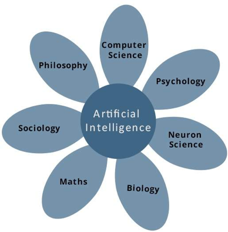 What is AI?
- IBM Deep Blue:
- Deep Blue was a
chess-playing computerdeveloped by IBM. It is known for being thefirst computer chess-playing systemto win both a chess game and a chess match against areigning world champion. - Deep Blue
wonitsfirst gameagainst a world champion on the10th February 1996, when itdefeatedGarry Kasparov in game one of asix-game match. However,Kasparovwon three and drew two of the following five games,defeating Deep Blueby a score of 4–2. - Deep Blue was then
heavily upgraded, and played Kasparov again inMay 1997. - Deep Blue won game six, therefore
winningthe six-game rematch 3½–2½ and becoming thefirst computer systemto defeat areigning world champion. - Kasparov
accused IBM of cheatingand demanded a rematch. IBM refused and dismantled Deep Blue.
- Deep Blue was a
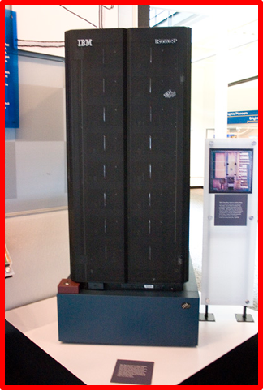
- Google DeepMind AlphaGo:
- AlphaGo is a
computer programthat plays the board gameGo. - It was developed by Alphabet Inc.'s
Google DeepMindin London. - AlphaGo had
three far more powerful successors, called AlphaGo Master, AlphaGo Zero and AlphaZero. - In October 2015, the original
AlphaGobecame thefirst computer Go programtobeatahuman professional Go playerwithout handicaps on a full-sized 19×19 board. - In March 2016, it
beatLee Sedol in a five-game match, thefirst time a computer Go programhas beaten a9-dan professional. - Although,* it
lostto *Lee Sedol in thefourth game, Lee resigned in the final game, giving a final score of 4 games to 1 in favour of AlphaGo. - In recognition of the victory,
AlphaGowas awarded an honorary 9-dan by the Korea Baduk Association. - At the 2017 Future of Go Summit, its successor
AlphaGo Master,* =beat Ke Jie, theworld No.1 ranked playerat the time, in a three-game match (the even more powerful AlphaGo Zero already existed but was not yet announced). - After this,
AlphaGowas awarded professional 9-dan by the Chinese Weiqi Association.
- AlphaGo is a
- The Internet of Things (IoT):
- Internet of things covers the broad categories of devices that are
connected to the Internet. - These applications have spread to both the
customerandindustrial domains. In the area of safety and customer experience, IoT is witnessing exponential demands. - Every second
over 127new devices will beconnectedto theInternet, according to David Evan’s calculations (former researcher of CISCO). This gives an idea about the constantly increasing reach of IoT. - It is
estimatedthatover 90% automobilesby 2020 will be IoT enabled. Moreover, according to the data found by Statista, there were around23.14 billion devicesin 2018 and thenumberwill reach26.66 billion by 2019.
- Internet of things covers the broad categories of devices that are
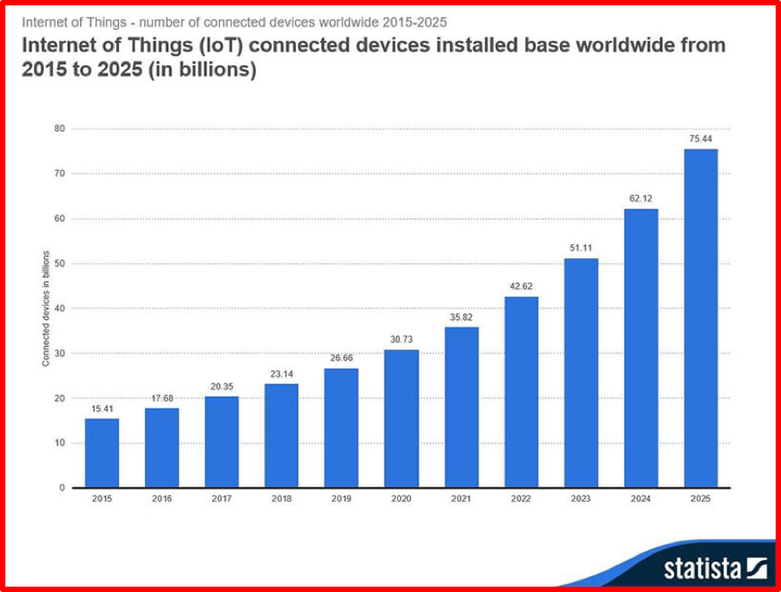
- Regenerative Medicine:
- Though it may sound like science fiction, doctors are already
producing made-to-order body parts. To get started, doctors scrape cells off the body part in question andgrow them in a petri dish. In time, thebody part growsstrong enough that it can beimplanted inside the patient. - One company, Organovo, has
developeda * 3D printer* capable ofprinting body parts. Over time, this new technology will becomeincreasingly mainstream, providing patients with lifesaving organ replacements.
- Though it may sound like science fiction, doctors are already
- Driverless vehicles:
- Automakers like Tesla, General Motors and Volvo have already developed semi-autonomous vehicles. But self-driving technology is rapidly evolving. General Motors announced that it will launch a car that has no steering wheel or pedals by 2019.
- Uber, meanwhile, is leading the push for pilotless flying vehicles, and has teamed up with NASA to develop an air-traffic-control system. Uber is also working with aircraft manufacturers to develop prototypes, with the intention of launching a beta program in 2020.
- These cars will be controlled by AI programs.
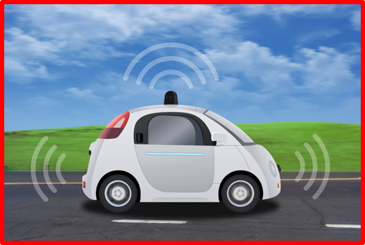
Try It: The Trolley Problem
- The trolley problem:
- Watch the following videos and then consider the questions below:
- Now imagine this situation:
Your car is driving at a moderate speed down a road. It turns a corner and there are five pedestrians standing in the road. Even if the car were to apply its brakes, it would still hit them, so the only way to avoid killing the pedestrians is to mount the pavement. Unfortunately, there is a single pedestrian standing on the pavement, who will be killed if the car chooses to swerve.
- Should the car continue in a straight line and kill 5 people, or should it make a decision to intentionally kill a single individual?
- Write down what you think the car should do and why?
- If it was later discovered that the car should have been driving more slowly, who is to blame? Is it the fault of the owner of the car, the manufacturer of the car, the programmer of the car, or the program?
- Should computers be programmed to always serve humanity and therefore choose options that lead to the greatest good?
- Cryptocurrency:
- At one point this year,
Bitcoinwas worth more than$19,000 per coin, and while thevalueof thecryptocurrencyhassincedeclined, asingle coinis still worth thousands of dollars. - Cryptocurrency may be
controversialtoday, but it hassteadily become increasingly mainstream. - Some of the
largest hedge fundsare betting on Bitcoin - Which could just the beginning of a cryptocurrency revolution.
- At one point this year,
- Quantum Computing:
- The
typical computeruses aseriesofbinary digits(zeros and ones) to communicate information. - Although today's computers are
quite powerful, they still haveconsiderable limitationsthat make it difficult toprocess challengingmachine-learning problems. - Quantum computers rely on
quantum bitsto carry information. Thesebits can existin astatewhich allow quantum computers toprocess challenging datasetsmuch better than traditional computers do. - As a result,
quantum computingcanhelpto produce seriousmachine-learning breakthroughsthat might otherwise be impossible solve. - While this technology is still in its early stages, companies like Microsoft and Google are
investing billionsin developingsupercomputerscapable of developing highly accurate predictive models. These models can be used in everything fromself-driving carstomarketing campaigns.
- The
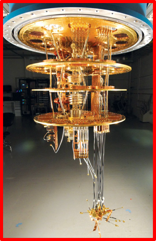
Try It: Technology Issues Research
- Research the following technologies and complete the table below:
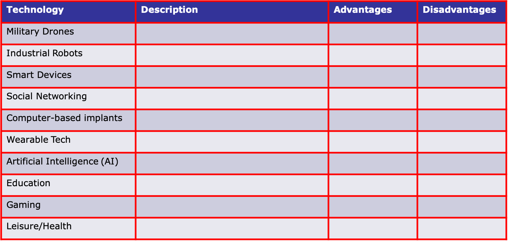
Learn It: Internet Privacy
Internet Privacy Issues - It is difficult to keep information private whilst using technology. When registering for a new website and services, you are expected to accept a privacy agreement and provide personal information that can often be used and shared by the provider.
Internet Privacy 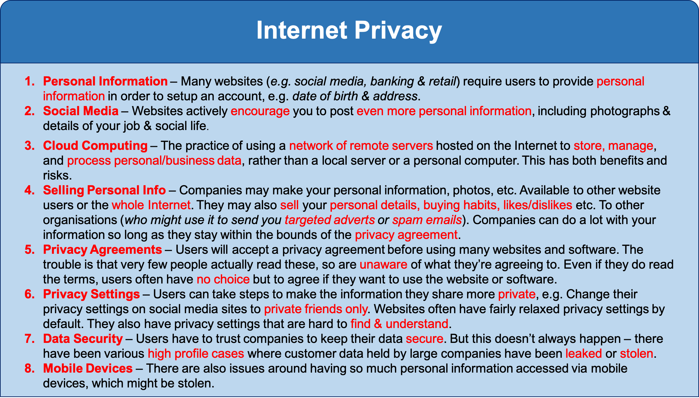
- Computer technology is also used to
monitor behaviour. Companies can monitor yourbehaviourover theInternetand use ofmobile phones. - New surveillance legislation forces
ISPsandmobile operatorsto keep arecordofevery citizen's browsing historyfor up toa year. - Whistle-blowers are people who
expose any informationthat is deemed illegal, unethical, or not correct within anorganisation's policies. - WikiLeaks is
a websitethatpublishes informationfrom anonymous whistle-blowers.
Learn It: Censorship and Surveillance
Censorship and Surveillance Issues - Censorship and surveillance are controversial topics. Some people support them in some form, e.g. to protect children or to stop terrorism. Others are completely against them, including several non-profit organisations which campaign against what they call cyber censirship and mass surveillance.
Censorship and Surveillance 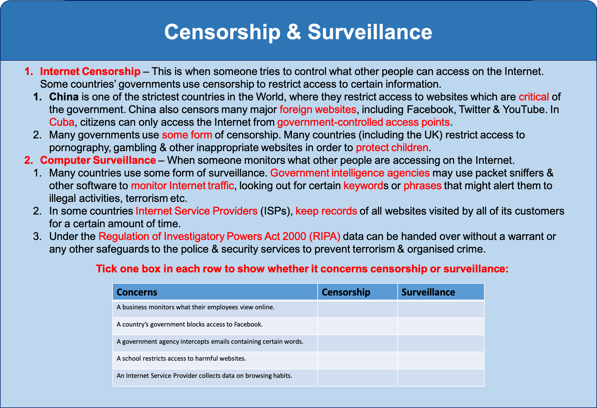
- Should we try to regulate the Internet?
- Read the following BBC report.
- Write a brief report about whether we should regulate the Internet.
- Make a list of the pros and cons of the regulation of online content.
Learn It: Social Consequences
Social Consequence Issues - Social Consequences – These cover ethical, cultural, legal and environmental issues that technology can have both negative and positive impacts on society.
Social Consequences
 Technology Issues
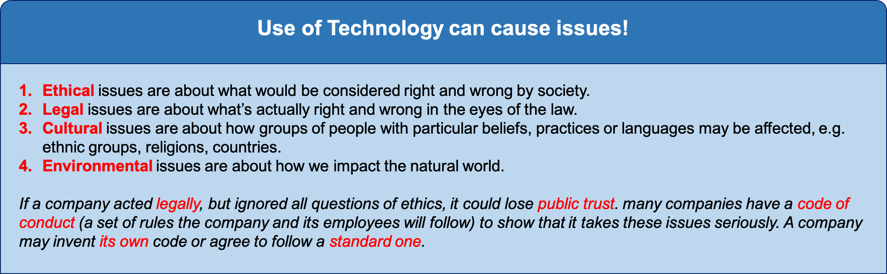
Technology Issues
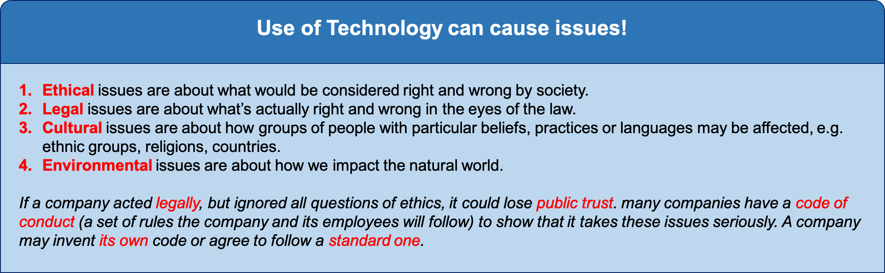
Learn It: Cyber Security Issues
Cyber Security Issues - A series of processes, practices and technologies that protect networks, computers, software and personal data from damage, loss and unauthorised access.
Cyber Security 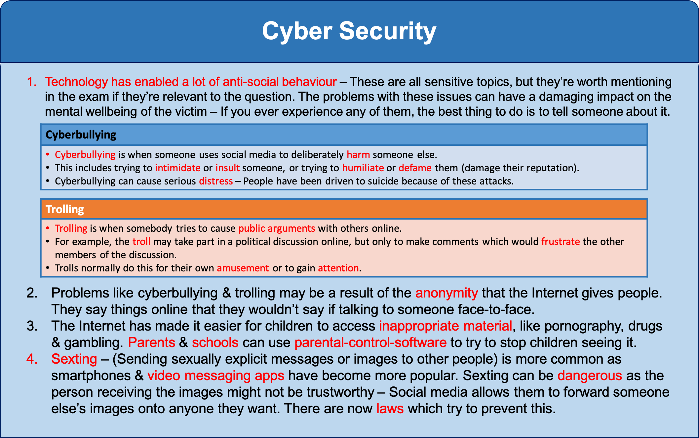
- A government cyber security policy may actually
weakenyour ownprivacyif it grants thegovernment accesstopersonal data. - A company may be held
liableif itdoes not protect datafromunauthorised access, it can be sued for a data breach. - Cyber security overlaps with many other aspects including, Mobile Technologies, Wireless Networking and Cloud Storage.
Learn It: Wireless Networking
Wireless (Wi-Fi) Wireless Fidelity – Like mobile phones and TVs, wireless networks use radio waves to transmit data. Microwaves are a type of radiowave that consist of electromagnetic radiation travelling in waves with a frequency higher that 1 gigahertz (1GHz to 300GHz per second). Data is transmitted across the network in frequency bands of between 2.4 and 5GHz. The bands are split into numbered channels that each cover a small frequency range. They also use different Wi-Fi spectrums for example; 802.11b, 802.11g and 802.11n.
Wireless Networking
- Easier
accessforunauthorised usersthan in a wired network. - Wireless networks are better in terms of the
environmentas far as the production of cables and network hardware are concerned. - Privacy can be
breachedas other users may beable to accesspersonal data. - Wireless networking is being used in the development of ='smart cities'=, with technology being used to improve the running of urban areas.
- This includes everything from
identifyingwhich roads need gritting when it snows, tocontrolling smart streetlights. - There are many
risks associatedwith ahighly connected system, which includetechnical failureswhich coulddisruptan entire network of streetlights. - Cyber security threats are always an issue, for example, if a
hackerwithmalicious intentgainedaccessto thesystem, they could potentially disrupt the lighting in a particular area.
Learn It: Mobile Technologies
Mobile Technologies - Are indispensable in the modern workplace. Due to their versatility, they offers a range of benefits, but also come with considerable risks to a business. There are both advantages and disadvantages of using mobile technology for both personal and business use.
What is mobile technology?
- Mobile technology is exactly what the name implies - technology that is
portable. Examples of mobile IT devices include:- Laptop, Tablets and Netbook Computers.
- Smartphones.
- Smart Watches.
- Global Positioning System (GPS) devices.
- Wireless debit/credit card payment terminals.
- Smart Devices/Appliances.
- Digital Assistants. etc..
Portable devices utilise many different communications technologies, including:
- Wireless Fidelity (Wi-Fi) - A type of wireless local area network technology.
- Bluetooth - Connects mobile devices wirelessly.
- Third Generation
(3G)and Fourth Generation(4G)- Global System for Mobile Communications(GSM). - General Packet Radio Service
(GPRS)data services - Data networking services for mobile phones. - Dial-up Services - Data networking services using modems and telephone lines.
- Virtual Private Networks - Secure access to a private network.
These technologies enable us to network mobile devices, such as phones and laptops, to our offices or the internet while travelling.
Advantages of mobile technology:
- Ability to make and accept payments wirelessly.
- Increased ability to communicate with friends and family.
- Greater access to modern apps and services.
- Improved networking capabilities
Disdvantages of mobile technology:
- Costs - New technologies and devices are often costly to purchase and require ongoing maintenance and upkeep.
- Workplace Distractions - As the range of technologies and devices increases, so does the potential for them to disrupt productivity and workflow in the business.
- Increased IT Security Needs - Portable devices are vulnerable to security risks, especially if they contain sensitive personal data.
- Personal Data - Your phone knows a lot about you in terms of, location, friends, online activity, buying trends, social media info and posts etc..
- Environmental Issues - Constant replacement of mobile phones and their batteries have a negative impact on the environment.
- Legal Issues - Illegal copies of MP3s are commonly found on mobile devices.
Learn It: Cloud Storage
Cloud Storage - Is a cstorage method in which data is stored on remote servers and accessed from the internet, or "cloud." It is maintained, operated and managed by a cloud storage service provider.
What is Cloud Storage?
- Cloud storage involves uploading data to a remote server or computer via an Internet connection.
- This data storage system is maintained by a third party, for example: Dropbox, Google Drive, Microsoft OneDrive and Apple iCloud.
- Instead of saving data on your computer's hard drive or other local storage device, you save it in a remote storage facility, and access it via the Internet.
- Clients pay for online storage space to which they can upload data such as photos, videos, music and documents.
There are several advantages of cloud storage:
- There is a reduced risk of physical damage.
- You can access the data anytime and from anywhere in the World.
- You can share the data with other people in different locations.
- Backups are no longer an issue, as it is the responsibility of the provider to keep the data safe.
- It is a secure form of storage - As long as the password is kept private.
- Storage capacity on your local machine is freed up, giving you more storage space.
There are also some disadvantages of cloud storage:
- You must have an Internet connection to access your data.
- Data is at risk of hacking.
- Basic storage plans are usually free, but larger storage capacities often require payment.
- The speed at which you can access your data is limited by your Internet connection, therefore it might take a long time to upload and download large files.
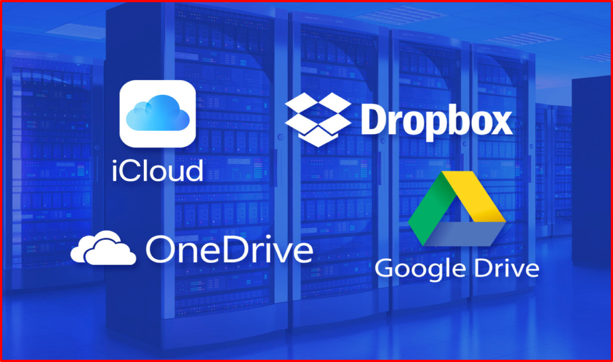
Learn It: Wearable Technologies
Wearable Technology - Are devices that can be worn and often include tracking information related to health and fitness behaviour.
What are Wearable Technologies?
- Wearable Technology is technology you can
wear, such assmart watches,activity trackersandsmart textiles(/for example, those used during a yoga class to track your positions and monitor how long you hold the pose for/). - Wearable technologies can include items that can:
- Be worn to monitor your movement, number of steps, time spent sleeping, sitting or standing and also tell you how to live a healthier life.
- Be worn by a swimmer to measure the number of kick-turns, breath counts and stroke effecicency. Or for a runner to track their distance, speed and heart rate during a run.
- Tighten your trainers automatically at the touch of a button, like Nike's replica Marty McFly's Mag Trainers.
- Some of these devices, as well as your
smartphoneenable yourmovementsto betrackedby your friends and family, or by complete strangers without your knowledge. Check out the Strava Global Heatmap website whichkeeps tracking informationaboutpeoplewho wear aFitbit smartwatch.
The data that is gathered from these wearable technologies could be used by organisations such as insurance companies and the government. 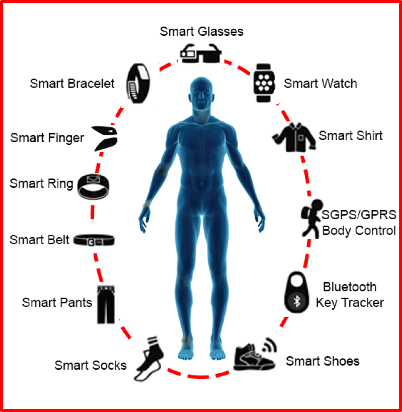
Learn It: Computer Based Implants
Computer Based Implants - Implants are typically an integrated circuit device or RFID transponder encased in silicate glass and implanted in the body under the skin.
What are Computer Based Implants?
- *Computer Based Implants have been used in many different fields of medicine:
- Cochlear Implants - These have been successfully used in restoring partial hearing to profoundly deaf people.
- Pace Makers - Heart implants may also include electrodes for regulating heartbeats, and warn of possible heart attacks and monitor the effects of medical treatments.
- RFID Chips - Can be inserted under the skin enable users to authorise actions such as, door access, security, contactless payments, access Bluetooth devices or send biometric information via Bluetooth.
Risks of Computer Based Implants:
- Risks of implants inducing malignant tumors.
- Implants may be a potential major breach of privacy, as it could contain biometric data, information about illnessess and hacking such a device could be dangerous.
- Many implanted devices need to be capable of being reprogrammed and they have to collect monitoring data from the patients which can be read by medical staff or by a malicious person trying to hack the implanted device.
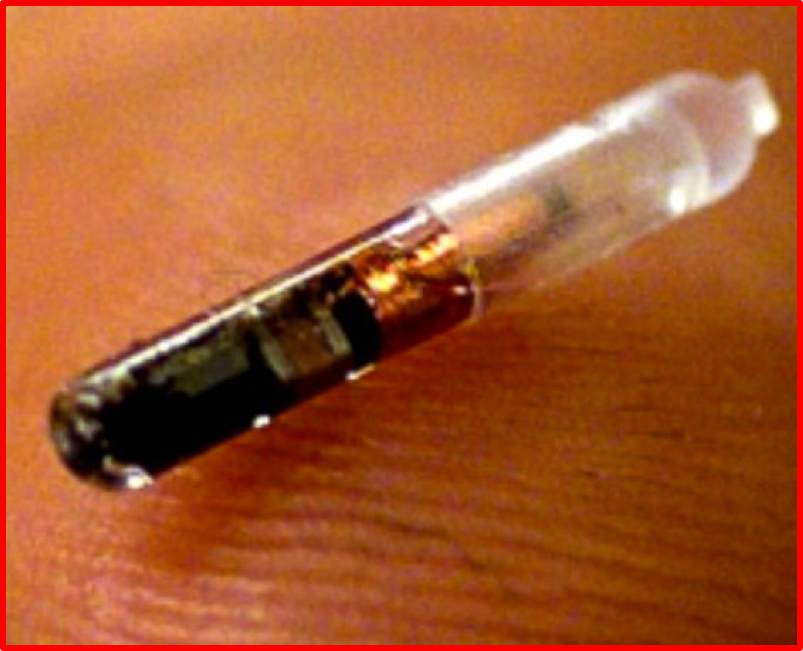
Try It: Computer Based Implants
- Q1: Write some ethical questions about implanted technology?
Learn It: Health Impacts
Health Impacts - Overuse of technology isn’t just dangerous to mental health – It can also cause physical conditions. But as it becomes more and more central to our lives, these problems can be harder to avoid.
What are Health Impacts?
- The Health and Safety at Work Act 1974 lays out rules of how to keep employees safe at work.
- When an employee is at work it is the
responsibilityoftheir employerto takereasonable measuresto make sure that theemployeesarenot put in danger. - There are lots of
Health and Safety rulessome of them are only relevant to specific types of work, for example, employees who drive vehicles, work in dangerous surroundings or with machinery. - There are also rules for office workers, including
how to safelyuse computer equipment. - The law states that an employer must:
- Provide screens that can be tilted.
- Provide anti-glare screen filters.
- Provide adjustable chairs.
- Provide foot supports.
- Make sure lighting is suitable.
- Make sure workstations are not cramped.
- Allow frequent breaks away from the computer.
- Pay for appropriate eye and eyesight tests by an optician.
These rules are only for employers and employees and do not cover students in schools, colleges or university.
Try It: Health Impacts
- Research health issues with technology and complete the following table:
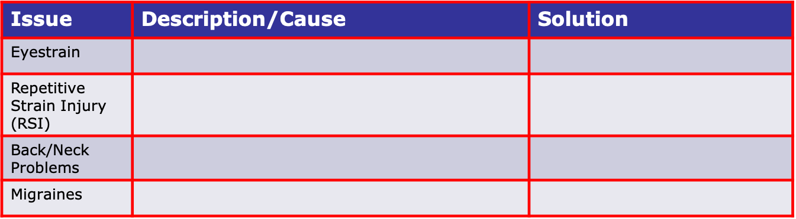
Learn It: The Digital Divide
The Digital Divide - A digital divide is any uneven distribution in the access to, use of, or impact of information and communication technologies between any number of distinct groups; these groups may be defined based on social, geographical, or geopolitical criteria, or otherwise.
What is The Digital Divide?
- People
without access to technology, orwho do not know how to use technology, are at a disadvantage to those who do. This is known as the digital divide. - There is a
digital dividebetweencountriesand also betweenindividualswithin the same country. - For example, in
England, there areareas withouthigh speed Internet access. - The digital divide can have a
huge impacton people who havelittleorlimited accessto digital technologies. - Having
low IT literacycanleadtolow-paid employmentor evenbeing unemployed. - The
Office for National Statisticshascalculatedthat in 2015over 3.5 million householdsin theUKhad no Internet access. - In 2013, it was
estimatedby thecharity Age UKthat itcosts householdswithout Internet access anextra £276 per year, because they cannot shop or pay bills online. - 38% of those
who are not onlineare also unemployed but:- From 2013 they have had to prove that they are actively searching for jobs online using the government’s Universal Jobmatch website.
- If they do not do this, their benefits can be stopped. Therefore they have to travel to libraries for access.
- Some of the main causes of the digital divide in the UK are:
- Money - People need money to access the internet and buy the latest devices, such as computers, smartphones and tablets.
- Location - Access to network coverage and high-speed broadband can vary greatly depending on where you live. Most large towns and cities have good network coverage and access, but rural areas can have limited or no coverage. Without these connections, the internet can be slow or non-existent.
- IT Literacy - Knowing how to use technology empowers people to make the most of it. People who don't know how to use computers and the internet do not have the opportunities that IT-literate people do.
- Internet Access - The Internet provides many opportunities for people who want to access online shopping, banking and job adverts. Students with internet access at home can research or revise with online help. Many universities and schools offer courses online. Social networking helps people make connections and stay in touch.
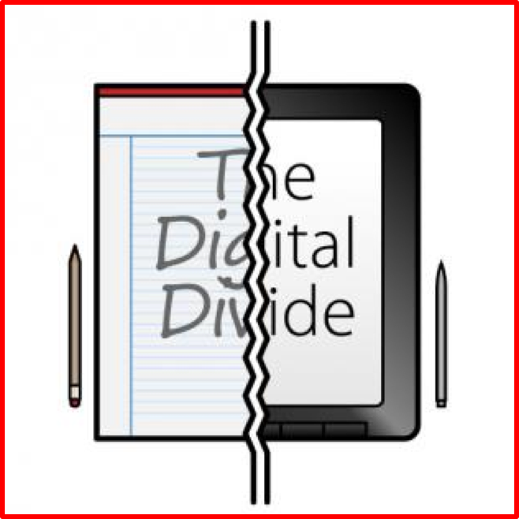
Try It: The digital Divide
Learn It: Environmental Issues
Environmental Issues - A broad term with several meanings relating to the physical world in which we live. Global air pollution is an environmental issue, but so is the distance between where you live and where your work or study.
What ar Environmental Issues?
- Devices
allhave anenvironmental impact. Take yoursmartphone– It’s made of materials that areminedfrom the Earth, itconsumes energywhen used, and when it’sthrown awayit could end up on alandfill site. - The
impact of digital technologyon theenvironmenthas been bothpositiveandnegative. - Environmental issues include the
carbon footprintandwaste productsthat result frommanufacturing computer systems. - But these are
often outweighedby thepositive effectson the environment of usingcomputerised systemsto manage processes that might otherwise of generated more pollution.
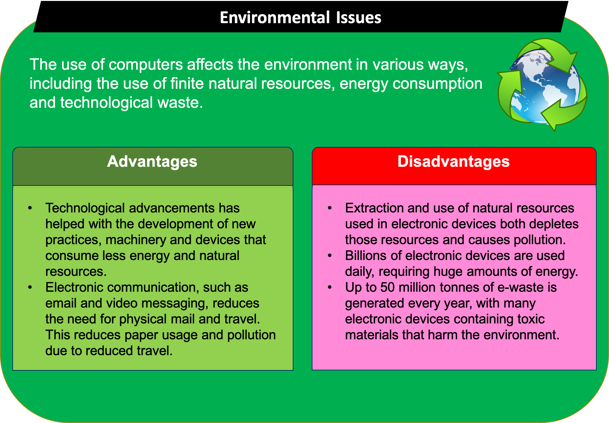
Try It: Environmental Issues
Research the following issues: 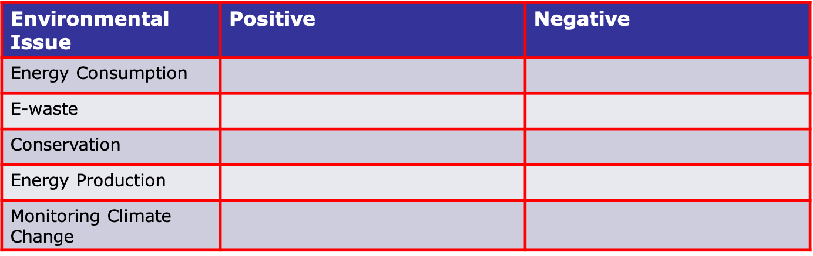
- Discuss and explain your views in a short report on the following statement:
‘Computer Scientists have a role to play in combating global climate change.’
2 Legal Issues
Learn It: What are Legal Issues?
Legal Issues - The law can affect the way that computer systems are developed, how they are used and how they are disposed of.
Legal Issues
- There are several laws that you should be aware of in the UK:
- The Data Protection Act 1998.
- The Data Protection Act 2018.
- The Computer Misuse Act 1990.
- The Copyright, Designs and Patents Act 1988.
- The Freedom of Information Act 2000.
- Creative Commons Licencing.
The Data Protection Act 1998 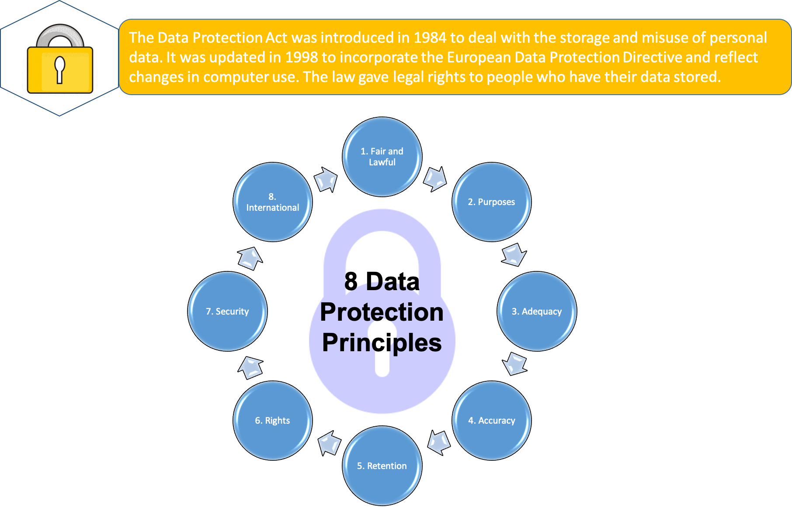
- The Data Protection Act 1998 has
eight principlesthat apply topersonal dataof anyindividual. - In May 2018, the
General Data Protection Regulation (GDPR)was introduced and replaced the Data Protection Act. - The eight principles of data protection laid out in the 1998 Data Protection Act will remain relevant, with changes to some of the key principles.
- If an organisation stores personal data of living individuals, that data must comply with the following eight principles:
- Data must be processed fairly and lawfully.
- Data must be adequate, relevant and not excessive.
- Data must be accurate and up to date.
- Data must not be retained for longer than necessary.
- Data can only be used for the purpose for which it was collected.
- Data must be kept secure.
- Data must be handled in accordance with people's rights.
- Data must not ne transferred outside of the EU without adequate protection.
The Data Protection Act 2018 is the UK’s implementation of the General Data Protection Regulation (GDPR) Click here for details
- The six principles of GDPR (General Data Protection Regulations) are similar in many ways to the eight principles of the Data Protection Act. While the six principles of GDPR do not include individuals’ rights or overseas transfers, these are included elsewhere in GDPR.
- The six principles of The Data Protection Act 2018 are that data must be treated in a way that is:
- Lawful, fair and transparent - There has to be legitimate grounds for collecting the data and it must not have a negative effect on the person or be used in a way they wouldn’t expect.
- Limited for its purpose - Data should be collected for specified and explicit purposes and not used in a way someone wouldn’t expect.
- Adequate and necessary - It must be clear why the data is being collected and what will be done with it. Unnecessary data or information without any purpose should not be collected.
- Accurate - Reasonable steps must be taken to keep the information up to date and to change it if it is inaccurate.
- Not kept longer than needed - Data should not be kept for longer than is needed, and it must be properly destroyed or deleted when it is no longer used or goes out of date.
- Integrity and confidentiality - Data should be processed in a way that ensures appropriate security, including protection against unauthorised or unlawful processing, loss, damage or destruction, and kept safe and secure.
The Computer Misuse Act 1990
- The Computer Misuse Act 1990 was introduced to
stop hackingandcyber crime. It introduced three new offences:
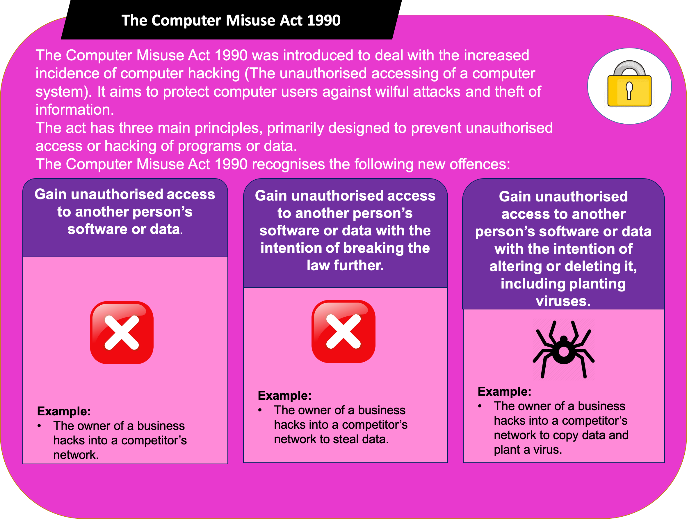
- This act also applies to making, supplying or obtaining anything which can be
usedin acomputer misuse offence.
The Copyright, Designs and Patents Act 1988
- This act was
originally designedto protect thecreatorsof books, music, videos and software from having their workillegally copied.
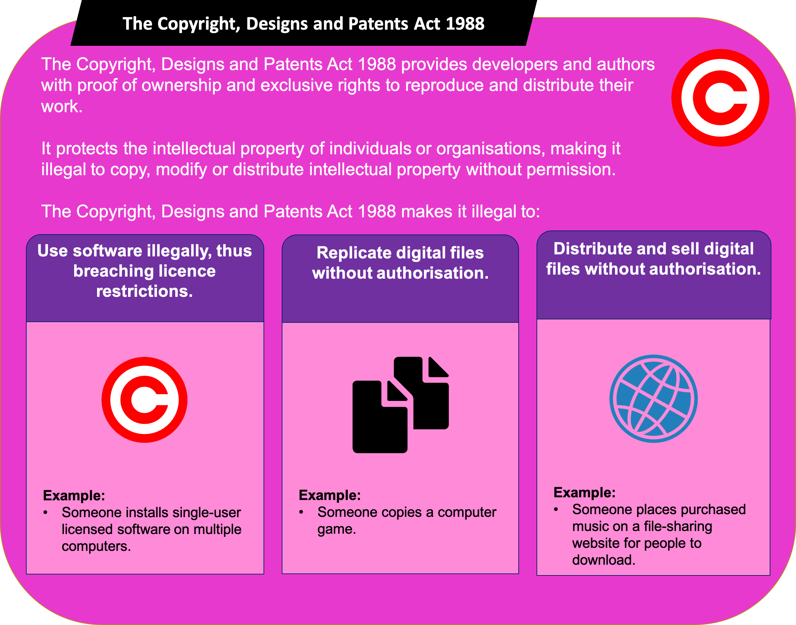
- However, although a piece of software such as an applications package, game or operating system
is protected,algorithmsare not eligble for protection. So if you come up with a new improved searching algorithm, you cannot stop others from using it.
The Freedom of Information Act 2000
- The increased use of
computerised systemsanddigital communicationshas led to theenactment of new lawsto control that usage. - Personal data about everyone, including financial information, is held online.
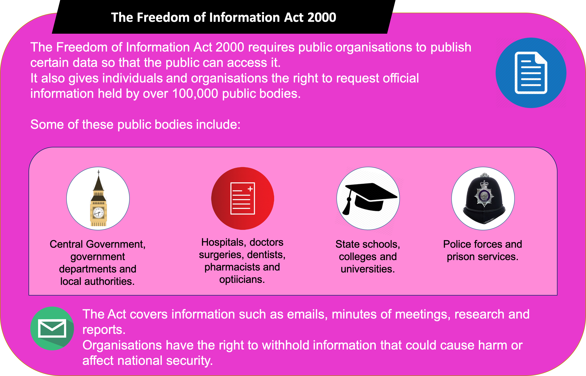
Creative Commons Licencing
- Creative commons is an
organisationthatprovides licencesallowing the creators of copyright works togivethepublic permissionto share and use this work under certain conditions.
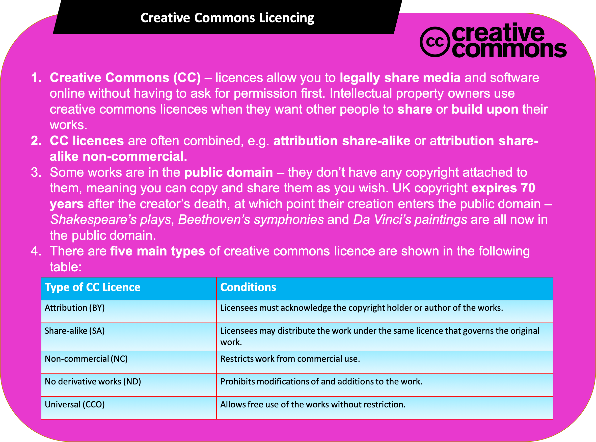
Badge It: Exam Style Questions
Silver - Technology and Ethics (18 Marks)
- Many people use smartphones. Smartphones often include a range of
sensors and have the ability to run software known as
apps.Smartphones are an example of a mobile technology.
- a) Discuss some of the ethical, legal and environmental issues that surround the use of smartphones and apps on them.
- Cloud storage is being increasingly used by individuals and
businesses to store their data.
- a) Discuss some of the ethical, legal and environmental issues that surround the use of cloud storage.
Upload to 3.7 Ethical, Legal and Environmental impacts of Digital Technology on Wider Society: Silver on BourneToLearn
Badge It: Exam Style Questions
Gold - Ethical and Legal (12 Marks)
- In recent years, there has been a large growth in the use of cloud storage.
- a) Discuss the advantages and disadvantages of using cloud storage.
- b) In your answer you should include an explanation of the reasons for the large growth in recent years and consider any legal, ethical and environmental issues related to the use of cloud storage.
Upload to 3.7 Ethical, Legal and Environmental impacts of Digital Technology on Wider Society: Gold on BourneToLearn
Badge It: Exam Style Questions
Platinum - Ethical and Legal (8 Marks)
- Chess is a two-player board game. Every year there is a competition to find the best chess-playing computer program. In 2011 the chess program Rybka was accused of having copied program code from other chess-playing computer programs and was disqualified from the World Computer Chess Championship. Prize money won in previous years had
to be returned.
- a) To date, it has never been proven or disproven that Rybka contained copied program code. State two reasons why it could be difficult to prove if program code in Rybka had been copied from another program.
- b) The program code that Rybka was accused of copying was open-source, this means that it was publically available so that anyone could look at it. The programmers of Rybka could have tried to prove they were innocent by publishing all their program code. This would allow people to compare it to the code they were accused of copying and see that it was different. Assuming that there was not any copied program code in Rybka, state one reason why the programmers might not want to do this.
- Some people believe that copying program code without permission should not be a crime. State one reason why they might believe this and state one reason why some people would disagree with them.
- Many organisations provide free public access to a wireless network.
- a) Explain three ethical, legal or data privacy issues that an organisation should be aware of when allowing this access.
Upload to 3.7 Ethical, Legal and Environmental impacts of Digital Technology on Wider Society: Platinum on BourneToLearn